Manual Transmission Removal/Installation
MANUAL TRANSMISSION REMOVAL/INSTALLATION1. Drain the transmission oil.
2. Remove the undercover.
3. Remove the starter.
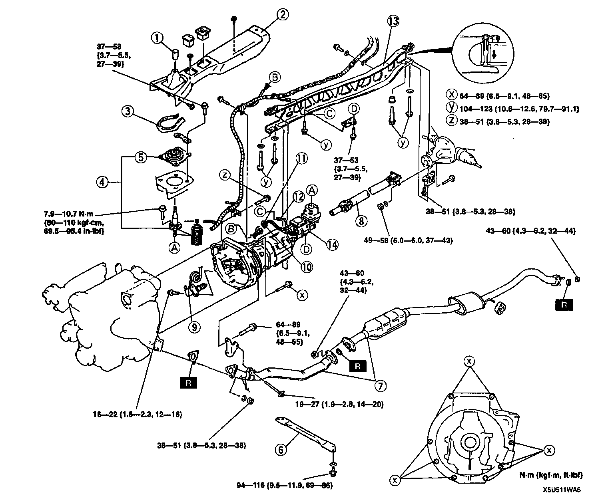
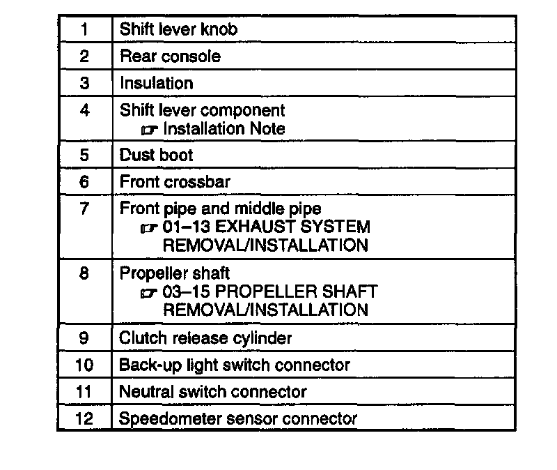
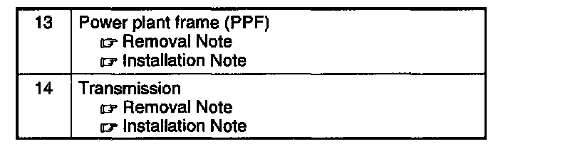
4. Remove in the order indicated in the table.
5. Install in the reverse order of removal.
6. Add the specified amount and type of transmission oil.
7. Warm up the engine and transmission, inspect for oil leakage, and verify the transmission operation.
Power Plant Frame (PPF) Removal Note
1. Disconnect the wire harness from the PPF.
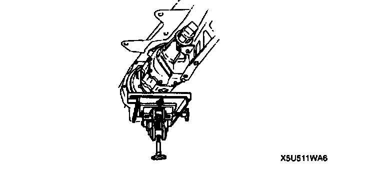
2. Support the transmission with a jack.
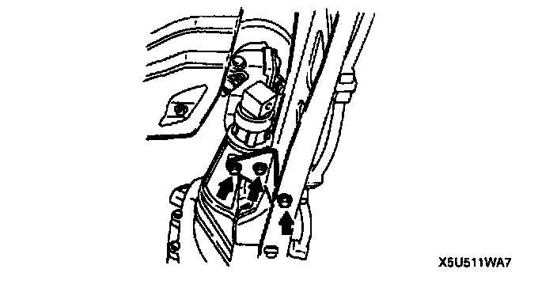
3. Remove the PPF bracket.
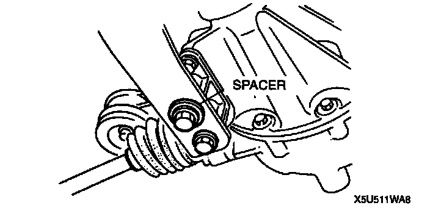
4. Remove the differential-side bolts, and pry out the spacer.
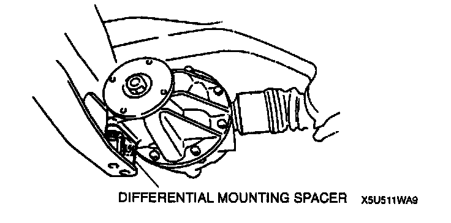
5. Remove the differential mounting spacer.

Caution: Removing the PPF spacers will reduce the performance of the PPF. If the spacers are removed, replace the PPF as a component.
6. Remove the transmission-side bolts, and remove the PPF.
Note: If the sleeve can not be removed easily, tap the side of sleeve with a plastic hammer.
7. Remove the sleeve.
Transmission Removal Note
1. Support the transmission with a transmission jack.
2. Loosen the transmission installation bolts.
Caution: Shaking the transmission could damage the crankshaft position sensor on the engine. When removing the transmission, do not shake it up and down or side to side.
3. Remove the transmission.
Transmission Installation Note
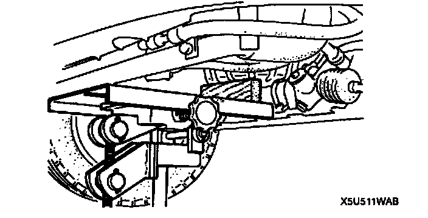
1. Tilt the engine by pushing up on the front of the oil pan with a wooden block and a transmission jack.
2. Support the transmission with a transmission jack.
3. Raise the transmission into place and install and tighten the installation bolts.
Tightening torque 64 - 89 Nm (6.5 - 9.1 kgf-m, 48 - 65 ft. lbs.)
Power Plant Frame (PPF) Installation Note
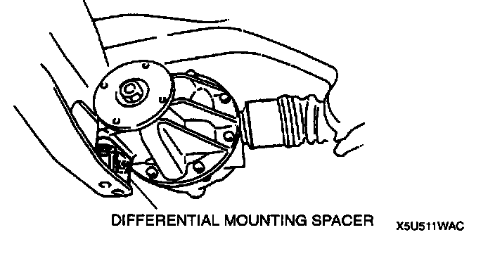
1. Install the differential mounting spacer.
Tightening torque 38 - 51 N m(3.8 - 5.3 kgf-m, 28 - 38 ft. lbs.)
2. Support the transmission with a jack so that it is level.
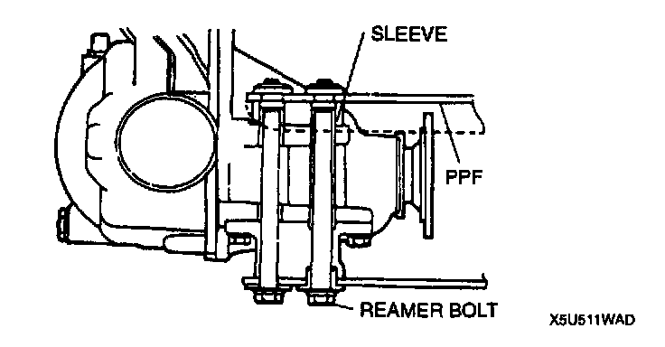
3. Position the PPF and install the sleeve.
4. Install the spacer and bolts and tighten the reamer bolt making sure the threading is aligned properly. The reamer bolt should be installed in the forward hole.
5. Tighten the outer bolts making sure the threading is aligned properly.
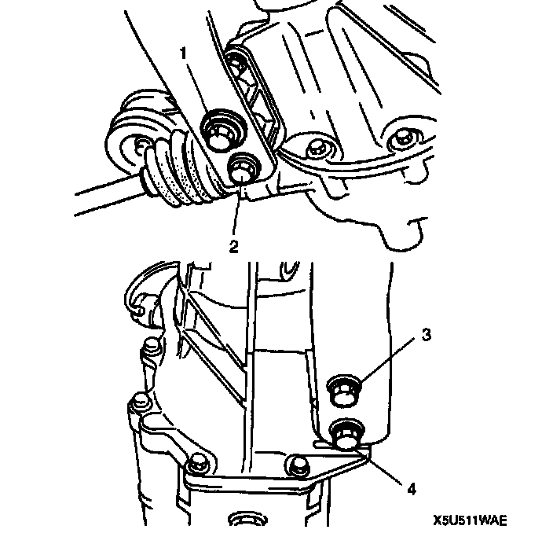
6. Tighten the bolts to the specified torque in the order shown.
Tightening torque 104 - 123 N m (10.6 - 12.6 kgf-m, 76.7 - 91.1 ft. lbs.)
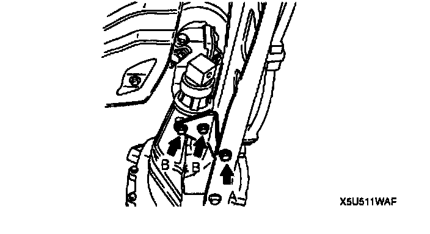
7. Install the PPF bracket.
Tightening torque
A: 104 - 123 Nm (10.6 - 12.6 kgf-m, 76.7 - 91.1 ft. lbs.)
B: 37 - 53 Nm (3.7 - 5.5 kgf-m, 27 - 39 ft. lbs.)
8. Remove the jack, and connect the wire harness.
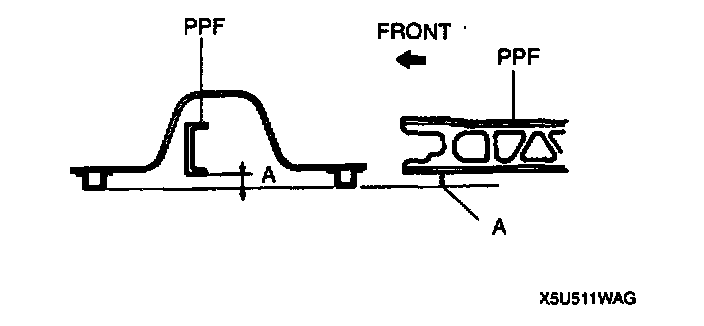
9. Measure distance A with a straightedge and vernier calipers.
Distance
A: 60.0 - 72.0 mm (2.37 - 2.83 inch)
10. If the distance is not as specified, reposition the PPF to the transmission.
Shift Lever Component Installation Note
Note: The change control case must also be filled with the specified amount of oil whenever the extension housing has been removed or the transmission has been overhauled.
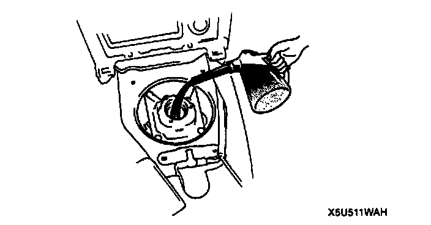
1. Pour the specified amount of oil into the change control case.
Specified oil
Grade:
API service GL-4 or GL-5
Viscosity:
SAE 75W-9O
Capacity:
80 - 95 cc (4.9 - 5.8 cu inch)
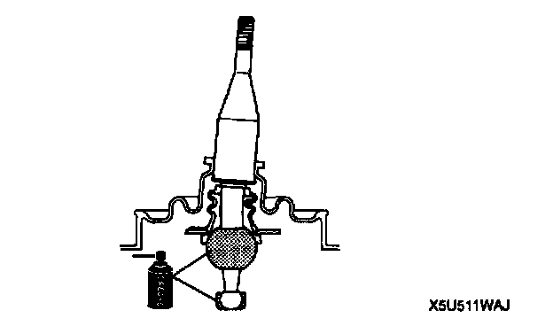
2. Apply grease to the shift lever component as shown in the figure.
3. Apply sealant to the contact surfaces of the shift lever component and the change control case.
4. Install the shift lever component.